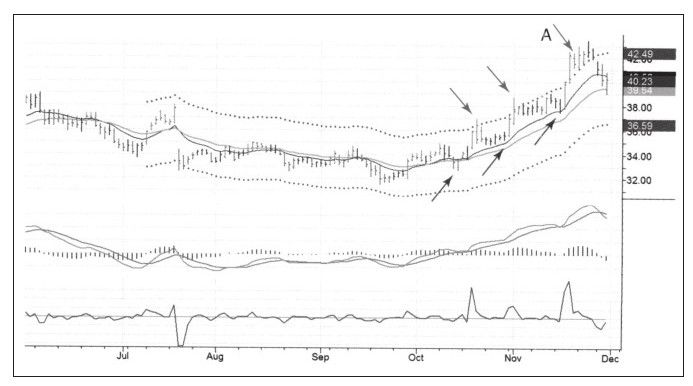

如果使用通道技术给交易设定了盈利目标，但后来你觉得反弹高度会更高一些怎么办？你可能会持有多长时间？尽管价格有时候会反弹得很高，它容易让人放弃先前的决定而持有更长时间，但经验告诉我不要持有头寸时间过久。
如果价格比你设定的初始目标价低一些，你会获利了结吗？当这个问题摆在我面前的时候，我就等价格创新高失败的那天以收盘价卖出，或者在次日开盘后不久卖出。
还有一件在交易中非常重要的事情是不要试图预测顶底。一波上涨的最高成交价是市场最贵的那个价格，切记只有那一个价格，因为这个价格出现的频率很低，所以你恰好在这一价格交易的概率就很低，财富会因你寻找顶底而流失。我很早以前就放弃了去寻找绝对的顶底，所以请你记住，最高价永远是最贵的那个价格。
看图4-20，雅虎股价从10月份开始一波行情。和其他多数交易一样，起初价格低于价值，之后反弹到上轨之上，然后跌回价值区，之后又上涨到上轨之上。之后的第二波上涨，价格回调不多，表明股价上涨得很坚决，不给空头参与机会。

在11月价格回到价值区直接突然快速上涨，达到上轨后又大涨了一天，这一波上涨的第三天股价调整。强力指标显示股价振幅收窄，并且成交量下降，更重要的是股价创新高失败了，这是卖出的信号。
后来几天价格虽然又出现新高，但是大的上涨结束了。三天没有创出新高，价格开始跌回到价值区。早卖胜过晚卖，只有那些有魔法水晶球的人知道每次价格运动的顶部，但这些以魔法水晶球为生的人却经常让水晶球碎成一地。在交易后千万不要后悔，记住这个词——知足。